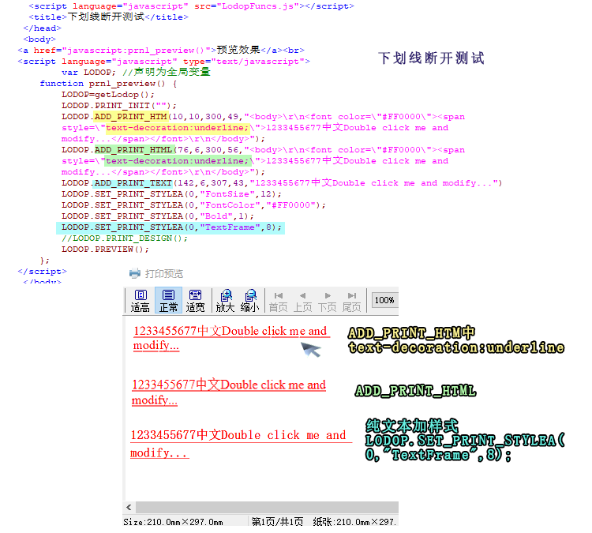

[测试]lodop打印text-decoration:underline下划线断开测试
测试：
1.ADD_PRINT_HTM中text-decoration:underline，里面有英文和数字时，下划线断开
2.ADD_PRINT_HTML（图形模式），下划线不断开
3.纯文本下划线，不断开
----------简短问答：----------
1.可尝试把ADD_PRINT_HTM 换成 ADD_PRINT_HTML（图形模式）试试，ADD_PRINT_HTML不如ADD_PRINT_HTM清晰，适合高精度的打印机，两者各有优势。
2.换成纯文本画线输出，参考http://www.c-lodop.com/demolist/PrintSample39.html
-----------简短问答结束：---------
测试代码：
<script language="javascript" src="LodopFuncs.js"></script> <title>下划线断开测试</title> </head> <body> <a href="javascript:prn1_preview()">预览效果</a><br> <script language="javascript" type="text/javascript"> var LODOP; //声明为全局变量 function prn1_preview() { LODOP=getLodop(); LODOP.PRINT_INIT(""); LODOP.ADD_PRINT_HTM(10,10,300,49,"<body>\r\n<font color=\"#FF0000\"><span style=\"text-decoration:underline;\">1233455677中文Double click me and modify...</span></font>\r\n</body>"); LODOP.ADD_PRINT_HTML(76,6,300,56,"<body>\r\n<font color=\"#FF0000\"><span style=\"text-decoration:underline;\">1233455677中文Double click me and modify...</span></font>\r\n</body>"); LODOP.ADD_PRINT_TEXT(142,6,307,43,"1233455677中文Double click me and modify..."); LODOP.SET_PRINT_STYLEA(0,"FontSize",12); LODOP.SET_PRINT_STYLEA(0,"FontColor","#FF0000"); LODOP.SET_PRINT_STYLEA(0,"Bold",1); LODOP.SET_PRINT_STYLEA(0,"TextFrame",8); //LODOP.PRINT_DESIGN(); LODOP.PREVIEW(); }; </script>
图示：
